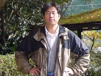

南 直治郎 教授 / Professor Minami, Naojiro

研究テーマ
哺乳類の初期発生と遺伝子発現に関する研究-胚ゲノムの活性化はどうして起こるのか？-
・エピジェネティック制御と胚発生
→胚性ゲノムの活性化時期のヒストンH3K4メチル化酵素（Smyd3）や H3K4を認識するクロマチンリモデリング因子（Chd1）が機能しないと 多能性関連遺伝子の機能が損なわれ、発生異常が起こることが分かっ た。
・卵母細胞特異的遺伝子Oog1は何をしているのか？
→最近、Oog1が♀の卵母細胞で精子形成関連遺伝子の抑制をしているの ではないか、ということが分ってきた。
→Oog1プロモーターの下流でGFPを発現するマウスでは、生殖細胞が減数 分裂前期のパキテン期に入るとGFPが発現します。生殖細胞の形成に関す る研究に使えます。
経歴
大分県出身- 京都大学工学部機械系学科入学
- 京都大学大学院農学研究科修士課程在学中、ウイスコンシン大学留学（京都大学交換留学生制度）
- 京都大学大学院農学研究科博士課程修了・農学博士取得
- 京都大学大学院農学研究科助手
- カリフォルニア大学ロサンゼルス校留学（文部省在外研究員）
- 京都大学大学院農学研究科准教授
- 京都大学大学院農学研究科教授